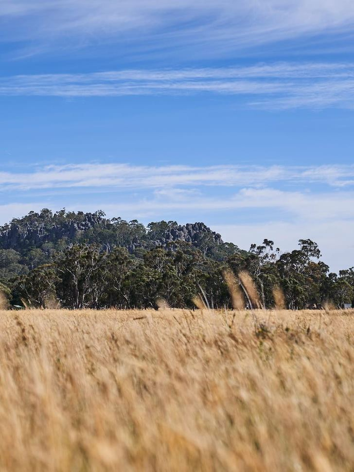
Woodend, in the Macedon Ranges
An 1890s shearing shed on a working truffle farm, looking out to Hanging Rock.
Appleyard Cottage is made for two: a fire, a copper bath, English gardens, a lake and a tennis court.
"With over 700 truffle trees planted the property overlooks the majestic Hanging Rock."
Lynne, your host
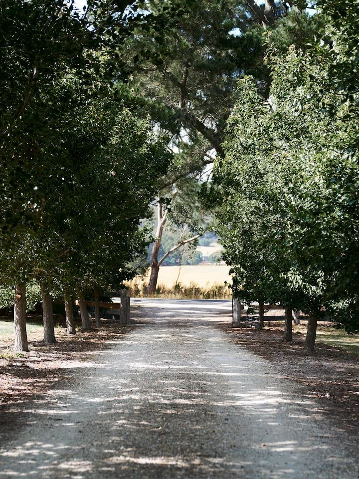
Through the farm gate.
The drive runs between the trees to the cottage.
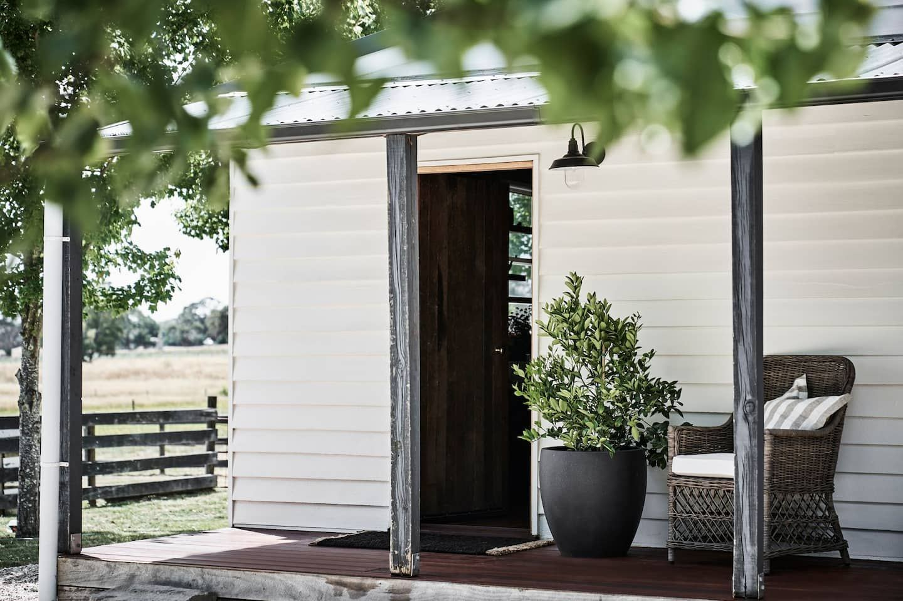
Appleyard Cottage.
The 1890s shearing shed, redesigned with love and styled by Lynda Gardner of Belle Bright. A top 10 finalist for Best Design Stay in the 2025 Airbnb Awards.
The cottage
One bedroom with a king bed, a wood fire, a copper bath and heated floors. Green walls, dark tile, a eucalypt mural and old leather.
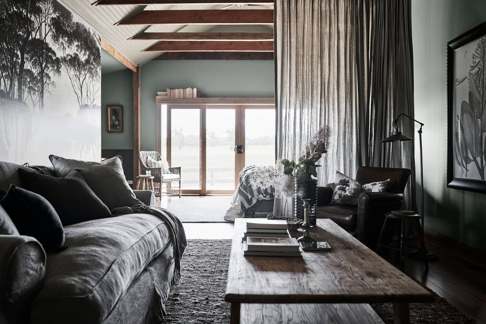
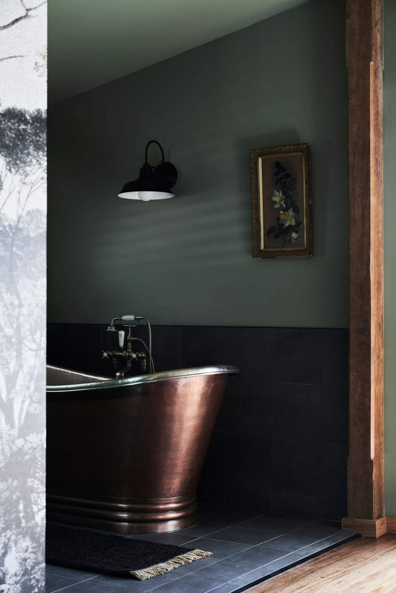
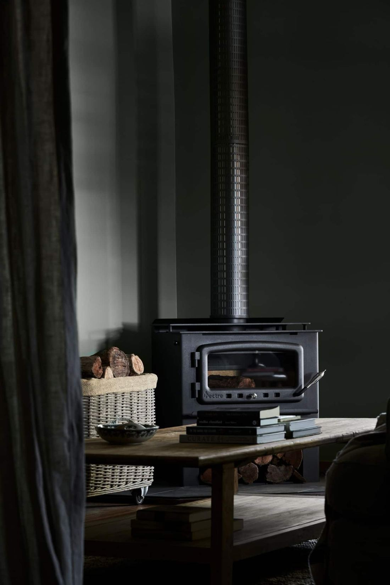
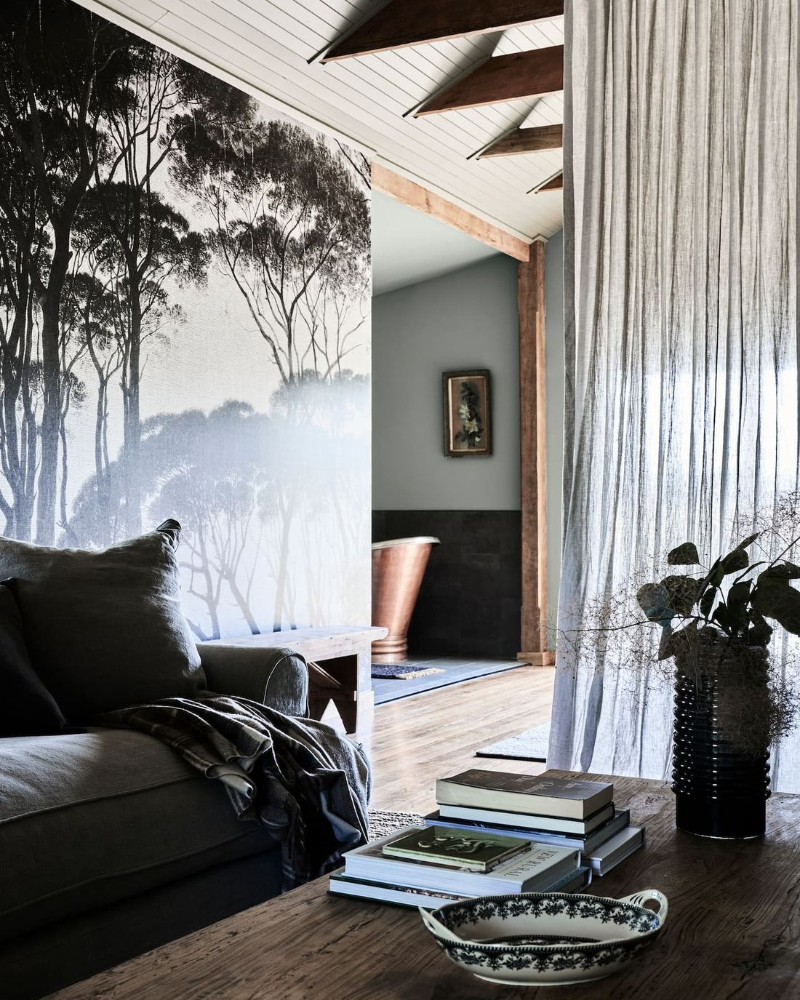
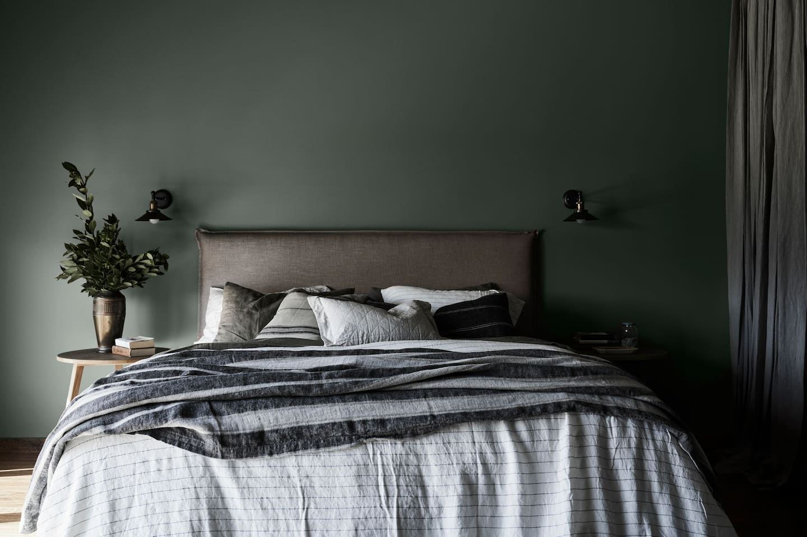
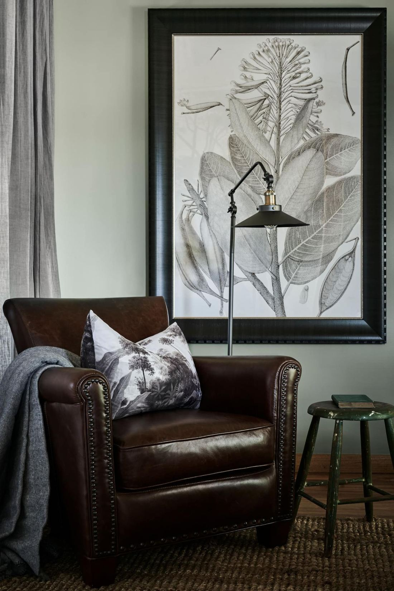
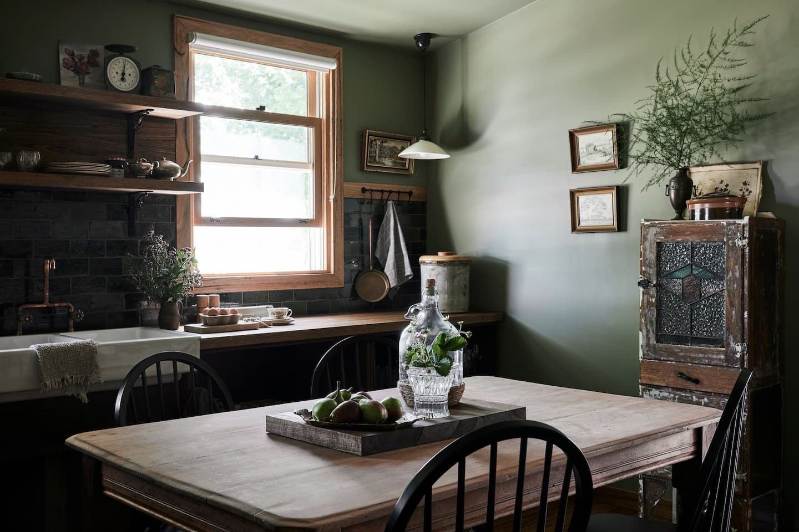
- For twoOne bedroom, one king bed, one bathroom.
- BreakfastLocally made muesli with yoghurt and fruit, in the cottage. Cafes are within 5 km if you'd rather go out.
- A bottle on arrivalA local wine from the Macedon Ranges.
- WinterGuests have arrived to the fire already lit, and the bathroom floors are heated.
The farm
A working truffle farm with English gardens, a seasonal stream running down to a lake under the willows, a pool and a tennis court.
Swipe or scroll sideways.
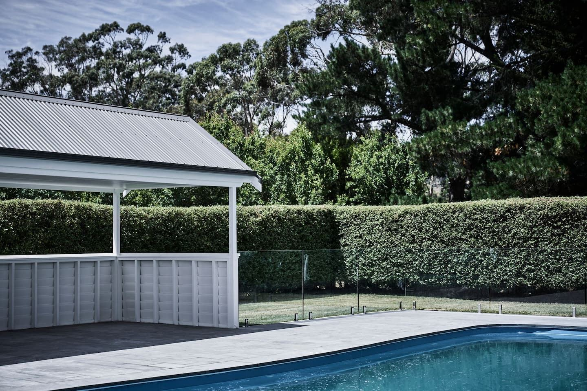
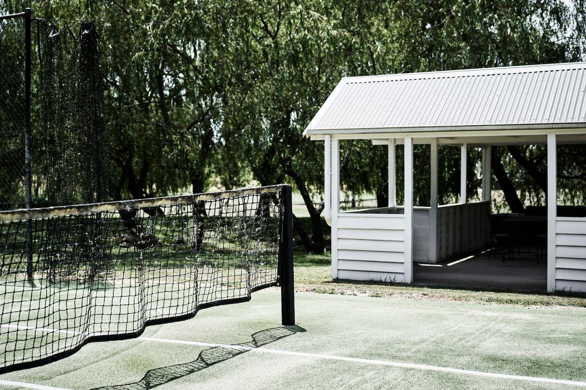
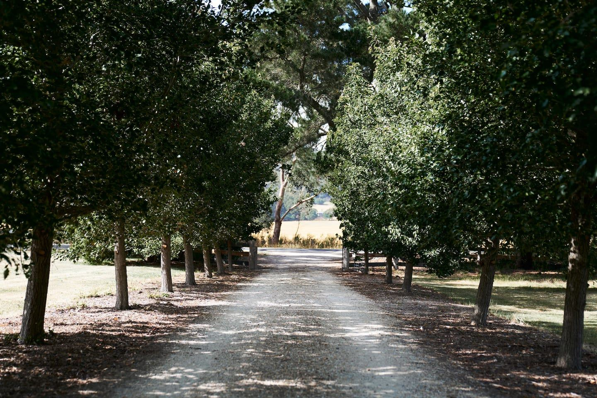
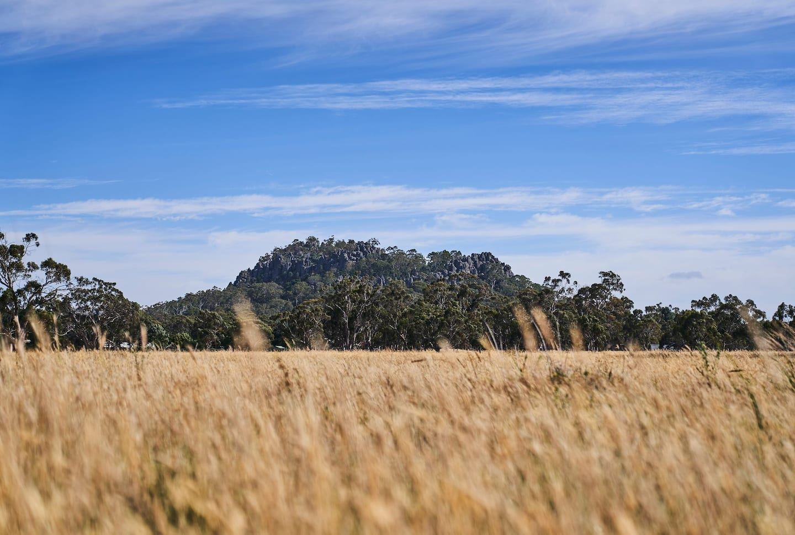
- SummerSwim in the solar heated saltwater pool, have a hit of tennis and take a cold drink in the pavilion, then sit by the lake at cocktail hour.
- Cooler monthsHave a local wine by the fire pit. Before you leave, pick seasonal herbs from the kitchen garden to take home.
Around the farm
Between Mount Macedon and Hanging Rock, with wineries, gin distilleries, farmers markets and food festivals across the ranges.
Why Appleyard? In Picnic at Hanging Rock, Appleyard College was the girls' school. The cottage is named for the story.
- Hanging Rock ReserveWalk the rock itselfA short drive, or a longer walk
- WoodendSupplies, shops and places to eatFive minutes by car
- Breakfast outCafes for breakfast and brunchWithin 5 km
- Cellar doors and distilleriesAcross the Macedon RangesNearby
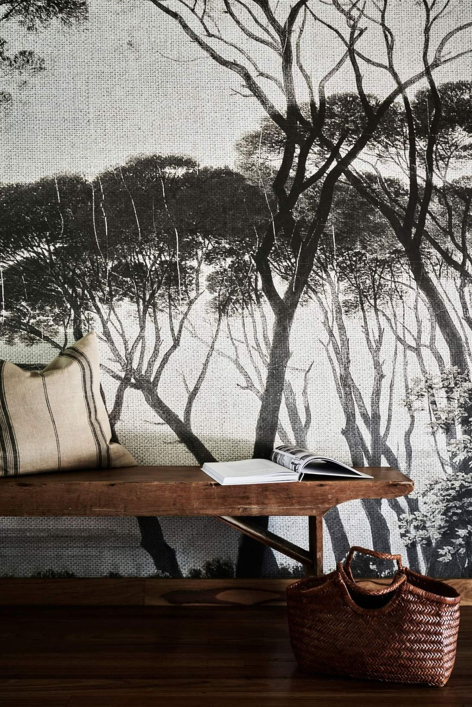
Lynne
"Welcome to our family farm, Hanging Rock Truffle Farm. We love our farm and look forward to sharing it with you." Lynne, truffle farmer and your host, on Airbnb. A Superhost.
"The fire place a HUGE bath and waking up to the sunrise were standouts for us."
Amy, Airbnb, August 2026
"The view from the bedroom was breathtaking, especially in the early morning hours when the sun comes up."
Angelique, Airbnb, July 2026
"I'm a very particular person regarding interiors and it was just perfect."
Olivia, Airbnb, September 2026
"You could even see Hanging Rock from the kitchen window."
Susan, Airbnb, May 2026
"We loved exploring the region including walking at Hanging Rock and enjoying the shops and eateries at Woodend."
Ernestine, Airbnb, September 2026
Check dates
- Check in after 3pm, check out by 11am. Self check-in with a keypad.
- Two guests.
- The pool is open from Cup Day weekend until the week of Easter.
- There are security cameras outside on the property.